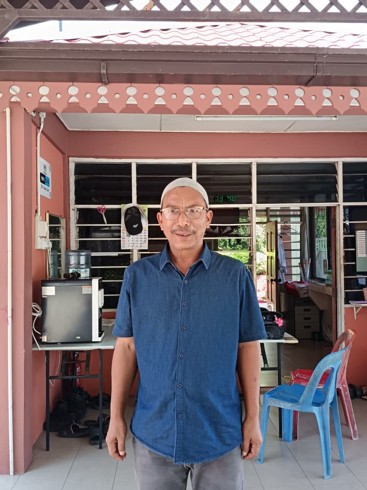

Background:Tuan Yusop Bin Abdullah

Nama:Tuan Yusop Bin Abdullah
Umur:58 Tahun
Asal:Kuala Perlis,Perlis
Jawatan:Pembantu Muzium
Status:Berkahwin
Anak:5 orang
Tempoh berkhidmat:25 Tahun
Tuan Yusop Bin Abdullah ialah Pembantu Muzium yang berdedikasi di Muzium Kota Kayang, Perlis.
Beliau memainkan peranan penting dalam membantu operasi muzium harian dan membantu pengunjung memahami sejarah dan warisan Perlis.
Beliau telah bekerja di sektor muzium selama berpuluh tahun dan masih bersemangat untuk memelihara pengetahuan budaya dan sejarah.
Tugas harian beliau untuk memastikan pelawat berpuas hati ialah menyantuni pelawat dengan menjadi penunjuk arah di setiap kawasan, memberi penjelasan dan ilmu baru mengenai artifak yang dipamerkan kepada pelawat.
Beliau juga menyediakan banyak program,permainan,serta event yang menarik kepada setiap laisan umur terutama anak muda agar pelawat berpuas hati.
Artifak paling terkenal yang diperkenalkan oleh Tuan Yusop ialah Acuan British, diperbuat daripada batu kawi .
Artifak kegemaran Tuan Yusop ialah Tenggala Kerbau.digunakan untuk membajak tanah sawah. Tuan Yusop meminati artifak ini kerana pengalaman melihat ayah beliau membajak serta melihat hasil kerja orang lain yang menjalani proses yang rumit tetapi akhirnya tetap menghasilkan seni yang unik.
Kenangan terindah Tuan Yusopp selama berkhidmat sebagai Pembantu Muzium ialah beliau menjumpai satu gua tembus ke atas,tempat yang tinggi.